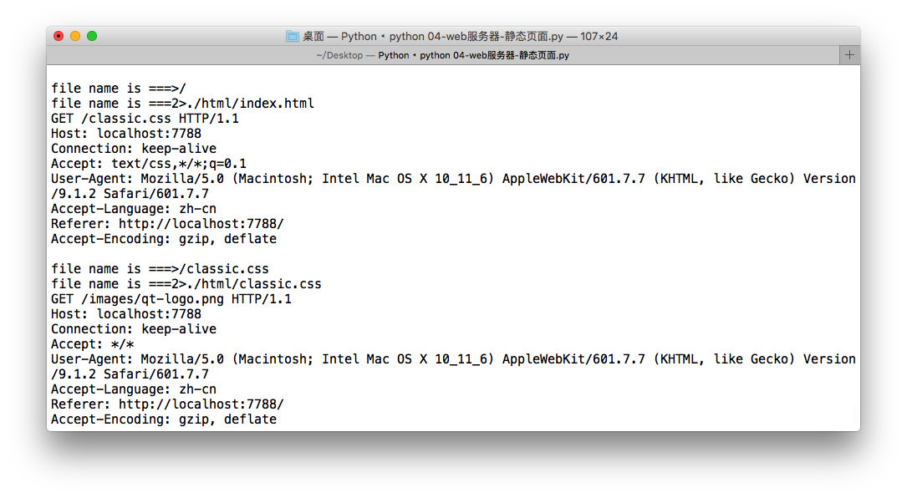
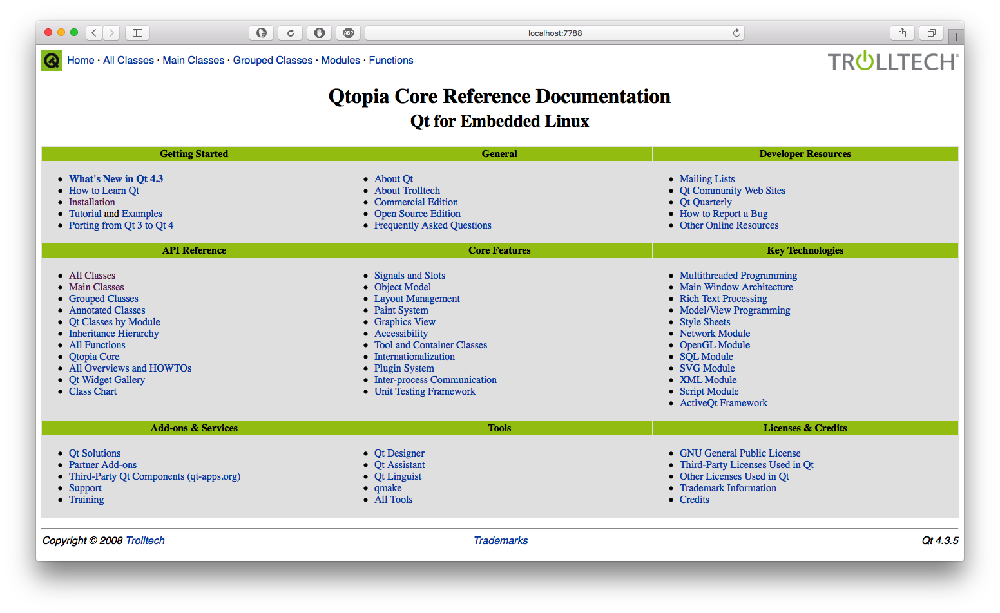

Web静态服务器-2-显示需要的页面
#coding=utf-8
import socket
import re
def handle_client(client_socket):
"为一个客户端进行服务"
recv_data = client_socket.recv(1024).decode('utf-8', errors="ignore")
request_header_lines = recv_data.splitlines()
for line in request_header_lines:
print(line)
http_request_line = request_header_lines[0]
get_file_name = re.match("[^/]+(/[^ ]*)", http_request_line).group(1)
print("file name is ===>%s" % get_file_name) # for test
# 如果没有指定访问哪个页面。例如index.html
# GET / HTTP/1.1
if get_file_name == "/":
get_file_name = DOCUMENTS_ROOT + "/index.html"
else:
get_file_name = DOCUMENTS_ROOT + get_file_name
print("file name is ===2>%s" % get_file_name) #for test
try:
f = open(get_file_name, "rb")
except IOError:
# 404表示没有这个页面
response_headers = "HTTP/1.1 404 not found\r\n"
response_headers += "\r\n"
response_body = "====sorry ,file not found===="
else:
response_headers = "HTTP/1.1 200 OK\r\n"
response_headers += "\r\n"
response_body = f.read()
f.close()
finally:
# 因为头信息在组织的时候，是按照字符串组织的，不能与以二进制打开文件读取的数据合并，因此分开发送
# 先发送response的头信息
client_socket.send(response_headers.encode('utf-8'))
# 再发送body
client_socket.send(response_body)
client_socket.close()
def main():
"作为程序的主控制入口"
server_socket = socket.socket(socket.AF_INET, socket.SOCK_STREAM)
server_socket.setsockopt(socket.SOL_SOCKET, socket.SO_REUSEADDR, 1)
server_socket.bind(("", 7788))
server_socket.listen(128)
while True:
client_socket, clien_cAddr = server_socket.accept()
handle_client(client_socket)
#这里配置服务器
DOCUMENTS_ROOT = "./html"
if __name__ == "__main__":
main()
服务器端

客户端
